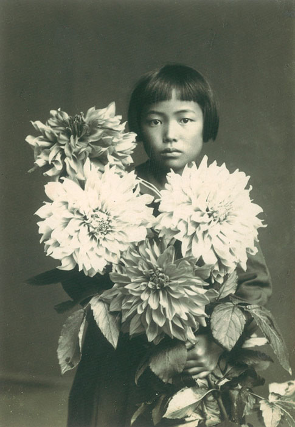
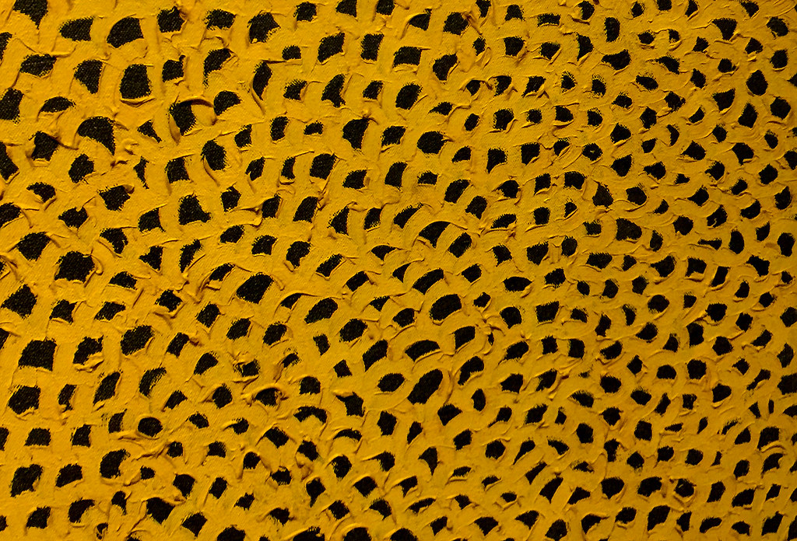
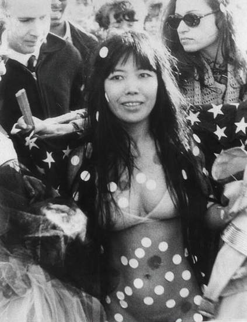
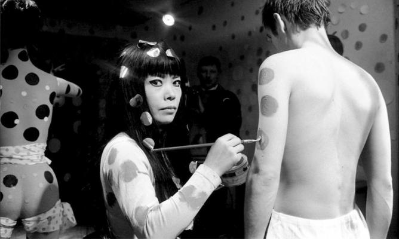
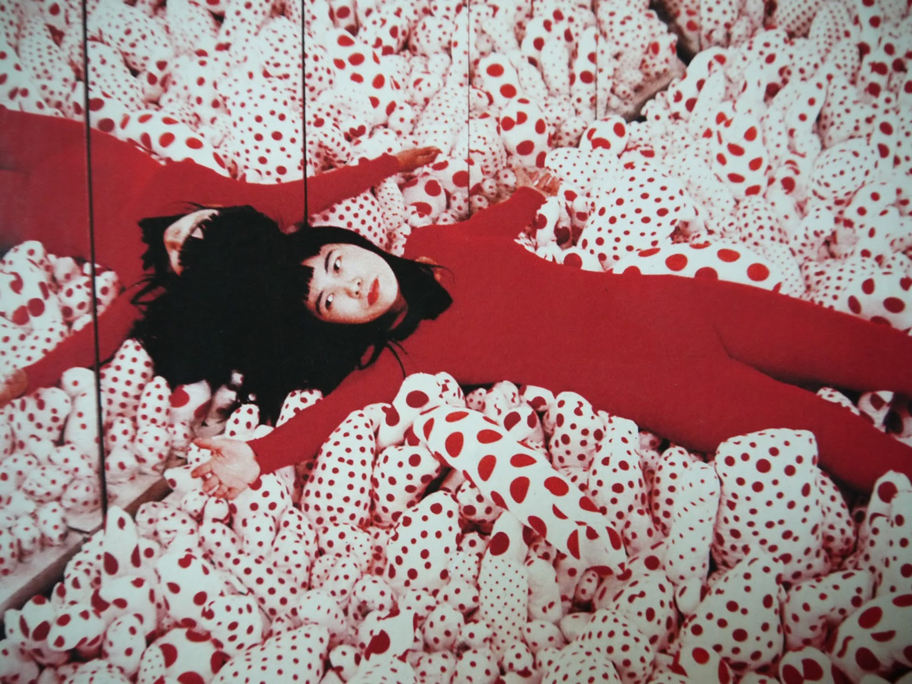
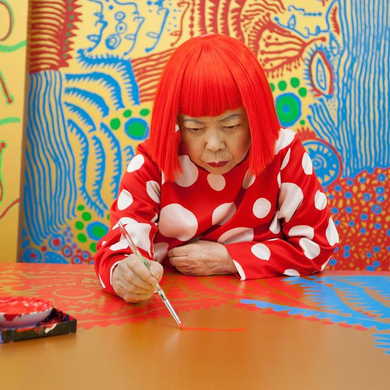
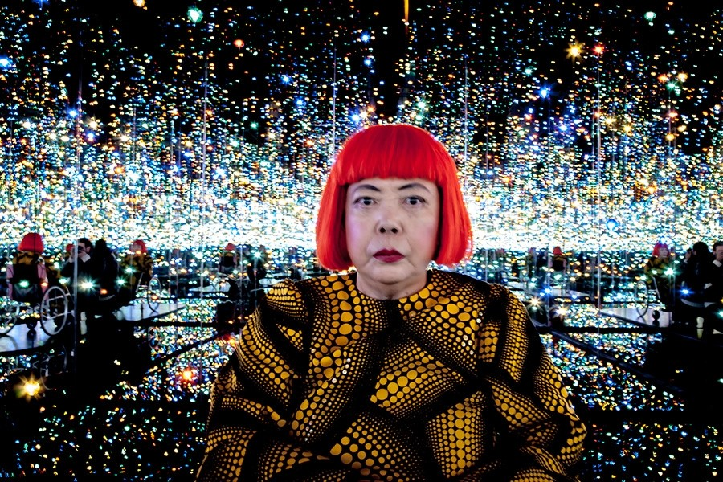

Early life: 1929—1949
 Yayoi Kusama was born on 22 March 1929 in Matsumoto, Nagano. Born into a family of merchants who owned a plant nursery and seed farm, Kusama began drawing pictures of pumpkins in elementary school and created artwork she saw from hallucinations, works of which would later define her career. Her mother was not supportive of her creative endeavors; Kusama would rush to finish her art because her mother would take it away to discourage her. Her mother was also apparently physically abusive, and Kusama remembers her father as "the type who would play around, who would womanize a lot".The artist says that her mother would often send her to spy on her father's extramarital affairs, which instilled within her a lifelong contempt for sexuality, particularly the male's lower body and the phallus: "I don't like sex. I had an obsession with sex. When I was a child, my father had lovers and I experienced seeing him. My mother sent me to spy on him. I didn't want to have sex with anyone for years [...] The sexual obsession and fear of sex sit side by side in me." Her traumatic childhood, including her fantastic visions, can be said to be the origin of her artistic style.When Kusama was ten years old, she began to experience vivid hallucinations which she has described as "flashes of light, auras, or dense fields of dots". These hallucinations also included flowers that spoke to Kusama, and patterns in fabric that she stared at coming to life, multiplying, and engulfing or expunging her, a process which she has carried into her artistic career and which she calls "self-obliteration". Kusama's art became her escape from her family and her own mind when she began to have hallucinations. She was reportedly fascinated by the smooth white stones covering the bed of the river near her family home, which she cites as another of the seminal influences behind her lasting fixation on dots.
When Kusama was 13, she was sent to work in a military factory where she was tasked with sewing and fabricating parachutes for the Japanese army, then embroiled in World War II. Discussing her time in the factory, she says that she spent her adolescence "in closed darkness" although she could always hear the air-raid alerts going off and see American B-29s flying overhead in broad daylight. Her childhood was greatly influenced by the events of the war, and she claims that it was during this period that she began to value notions of personal and creative freedom.
She went on to study Nihonga painting at the Kyoto Municipal School of Arts and Crafts in 1948. Frustrated with this distinctly Japanese style, she became interested in the European and American avant-garde, staging several solo exhibitions of her paintings in Matsumoto and Tokyo in the 1950s.
Early success in Japan: 1950—1956 By 1950, she was depicting abstract natural forms in water colour, gouache, and oil paint, primarily on paper. She began covering surfaces—walls, floors, canvases, and later, household objects, and naked assistants—with the polka dots that would become a trademark of her work.
The vast fields of polka dots, or "infinity nets", as she called them, were taken directly from her hallucinations. The earliest recorded work in which she incorporated these dots was a drawing in 1939 at age 10, in which the image of a Japanese woman in a kimono, presumed to be the artist's mother, is covered and obliterated by spots. Her first series of large-scale, sometimes more than 30 ft-long canvas paintings, Infinity Nets, were entirely covered in a sequence of nets and dots that alluded to hallucinatory visions.
On her 1954 painting Flower (D.S.P.S) Kusama has said:
One day I was looking at the red flower patterns of the tablecloth on a table, and when I looked up I saw the same pattern covering the ceiling, the windows, and the walls, and finally all over the room, my body and the universe. I felt as if I had begun to self-obliterate, to revolve in the infinity of endless time and the absoluteness of space, and be reduced to nothingness. As I realised it was actually happening and not just in my imagination, I was frightened. I knew I had to run away lest I should be deprived of my life by the spell of the red flowers. I ran desperately up the stairs. The steps below me began to fall apart and I fell down the stairs spraining my ankle.
New York City: 1957—1972
After living in Tokyo and France, Kusama left Japan at the age of 27 for the United States. She has stated that she began to consider Japanese society "too small, too servile, too feudalistic, and too scornful of women". Before leaving Japan to the United States, she destroyed many of her early works. In 1957, she moved to Seattle, where she had an exhibition of paintings at the Zoe Dusanne Gallery. She stayed there for a year before moving on to New York City, following correspondence with Georgia O'Keeffe in which she professed an interest in joining the limelight of the city, and sought O'Keeffe's advice. During her time in the US, she quickly established her reputation as a leader in the avant-garde movement and received praise for her work from the anarchist art critic Herbert Read.
In 1961 she moved her studio into the same building as Donald Judd and sculptor Eva Hesse; Hesse became a close friend. In the early 1960s Kusama began to create so-called soft sculptures by covering items such as ladders, shoes and chairs with white phallic protrusions. Despite the micromanaged intricacy of the drawings, she turned them out fast and in bulk, establishing a rhythm of productivity which she still maintains. She established other habits too, like having herself routinely photographed with new work[16] and regularly appearing in public wearing her signature bob wigs and colorful, avant-garde fashions.
Since 1963, Kusama has continued her series of Mirror/Infinity rooms. In these complex infinity mirror installations, purpose-built rooms lined with mirrored glass contain scores of neon-colored balls, hanging at various heights above the viewer. Standing inside on a small platform, an observer sees light repeatedly reflected off the mirrored surfaces to create the illusion of a never-ending space.
During the following years, Kusama was enormously productive, and by 1966 she was experimenting with room-size, freestanding installations that incorporated mirrors, lights, and piped-in music. She counted Judd and Joseph Cornell among her friends and supporters. However, she did not profit financially from her work. Around this time, Kusama was hospitalized regularly from overwork, and O'Keeffe persuaded her own dealer Edith Herbert to purchase several works to help Kusama stave off financial hardship. She was not able to make the money she believed she deserved, and her frustration became so extreme that she attempted suicide.
In the 1960s, Kusama organized outlandish happenings in conspicuous spots like Central Park and the Brooklyn Bridge, often involving nudity and designed to protest the Vietnam War. In one, she wrote an open letter to Richard Nixon offering to have sex with him if he would stop the Vietnam war. Between 1967 and 1969 she concentrated on performances held with the maximum publicity, usually involving Kusama painting polka dots on her naked performers, as in the Grand Orgy to Awaken the Dead at the MoMA (1969), which took place at the Sculpture Garden of the Museum of Modern Art. During the unannounced event, eight performers under Kusama's direction removed their clothing, stepped nude into a fountain, and assumed poses mimicking the nearby sculptures by Picasso, Giacometti, and Maillol.
In 1968, Kusama presided over the happening Homosexual Wedding at the Church of Self-obliteration at 33 Walker Street in New York and performed alongside Fleetwood Mac and Country Joe and the Fish at the Fillmore East in New York City. She opened naked painting studios and a gay social club called the Kusama 'Omophile Kompany (kok). The nudity present in Kusama's art and art protests was severely shameful for her family. This made her feel alone, and she attempted suicide again.
In 1966, Kusama first participated in the Venice Biennale for its 33rd edition. Her Narcissus Garden comprised hundreds of mirrored spheres outdoors in what she called a "kinetic carpet". As soon as the piece was installed on a lawn outside the Italian pavilion, Kusama, dressed in a golden kimono,[22] began selling each individual sphere for 1,200 lire (US$2), until the Biennale organizers put an end to her enterprise. Narcissus Garden was as much about the promotion of the artist through the media as it was an opportunity to offer a critique of the mechanization and commodification of the art market.
During her time in New York, Kusama had a brief relationship with artist Donald Judd. She then began a passionate, but platonic, relationship with the surrealist artist Joseph Cornell. She was 26 years his junior; they would call each other daily, sketch each other, and he would send personalized collages to her. Their lengthy association would last until his death in 1972.
Return to Japan: 1973—1977
In 1973, Kusama returned in ill health to Japan, where she began writing shockingly visceral and surrealistic novels, short stories, and poetry. In 1977, Kusama checked herself into a hospital for the mentally ill, where she eventually took up permanent residence. She has been living at the hospital since, by choice. Her studio, where she has continued to produce work since the mid-1970s, is a short distance from the hospital in Tokyo. Kusama is often quoted as saying: "If it were not for art, I would have killed myself a long time ago."
From this base, she has continued to produce artworks in a variety of media, as well as launching a literary career by publishing several novels, a poetry collection, and an autobiography. Her painting style shifted to high-colored acrylics on canvas, on an amped-up scale.
Revival: 1980s—present
Her organically abstract paintings of one or two colors (the Infinity Nets series), which she began upon arriving in New York, garnered comparisons to the work of Jackson Pollock, Mark Rothko, and Barnett Newman. When she left New York she was practically forgotten as an artist until the late 1980s and 1990s, when a number of retrospectives revived international interest. Yayoi Kusama: A Retrospective was the first critical survey of Yayoi Kusama presented at the Center for International Contemporary Arts (CICA) in New York in 1989, and was organized by Alexandra Munroe.
Following the success of the Japanese pavilion at the Venice Biennale in 1993, a dazzling mirrored room filled with small pumpkin sculptures in which she resided in color-coordinated magician's attire, Kusama went on to produce a huge, yellow pumpkin sculpture covered with an optical pattern of black spots. The pumpkin came to represent for her a kind of alter-ego or self-portrait. Kusama's later installation I'm Here, but Nothing (2000 to 2008) is a simply furnished room consisting of table and chairs, place settings and bottles, armchairs and rugs, however its walls are tattooed with hundreds of fluorescent polka dots glowing in the UV light. The result is an endless infinite space where the self and everything in the room is obliterated.
The multi-part floating work Guidepost to the New Space, a series of rounded "humps" in fire-engine red with white polka dots, was displayed in Pandanus Lake. Perhaps one of Kusama's most notorious works, various versions of Narcissus Garden have been presented worldwide venues including Le Consortium, Dijon, 2000; Kunstverein Braunschweig, 2003; as part of the Whitney Biennial in Central Park, New York in 2004; and at the Jardin de Tuileries in Paris, 2010.
In her ninth decade, Kusama has continued to work as an artist. She has harkened back to earlier work by returning to drawing and painting; her work remained innovative and multi-disciplinary, and a 2012 exhibition displayed multiple acrylic-on-canvas works. Also featured was an exploration of infinite space in her Infinity Mirror rooms. These typically involve a cube-shaped room lined in mirrors, with water on the floor and flickering lights; these features suggest a pattern of life and death.
In 2015-2016 the first retrospective exhibition in Scandinavia, curated by Marie Laurberg, travelled to four major museums in the region, opening at Louisiana Museum of Modern Art in Denmark and continuing to Henie Onstad Kunstsenter Museum, Norway, Moderna Museet in Sweden, and Helsinki Art Museum in Finland. This major show contained more than 100 objects and large scale mirror room installations. It presented several early works that had not been shown to the public since they were first created, including a presentation of Kusama's experimental fashion design from the 1960s.
In 2017, a 50-year retrospective of her work opened at the Hirshhorn Museum in Washington, DC. The exhibit featured six Infinity Mirror rooms, and was scheduled to travel to five museums in the US and Canada.
On 25 February 2017, Kusama's All the Eternal Love I Have for the Pumpkins exhibit, one of the six components to her Infinity Mirror rooms at the Hirshhorn Museum, was temporarily closed for three days following damage to one of the exhibit's glowing pumpkin sculptures. The room, which measures 13 square feet (1.2 m2) and was filled with over 60 pumpkin sculptures, was one of the museum's most popular attractions ever. Allison Peck, a spokeswoman for the Hirshhorn, said in an interview that the museum "has never had a show with that kind of visitor demand", with the room averaging more than 8,000 visitors between its opening and the date of its temporary closing. While there were conflicting media reports about the cost of the damaged sculpture and how exactly it was broken, Allison Peck stated that "there is no intrinsic value to the individual piece. It is a manufactured component to a larger piece." The exhibit was reconfigured to make up for the missing sculpture, and a new one was to be produced for the exhibit by Kusama. The Infinity Mirrors exhibit became a sensation among art critics as well as on social media. Museum visitors shared 34,000 images of the exhibition to their Instagram accounts, and social media posts using the hashtag #InfiniteKusama garnered 330 million impressions, as reported by the Smithsonian the day after the exhibit's closing. The works provided the perfect setting for Instagram-able selfies which inadvertently added to the performative nature of the works.
Also in 2017, the Yayoi Kusama Museum opened in Tokyo, featuring her works.
On 9 November 2019, Kusama's Everyday I Pray For Love exhibit was shown at David Zwirner Gallery until 14 December 2019. This exhibition incorporated sculptures and paintings. The exhibition was accompanied by a catalogue published by David Zwirner books containing texts and poems from the artist. This exhibition also included the debut of her INFINITY MIRRORED ROOM - DANCING LIGHTS THAT FLEW UP TO THE UNIVERSE, 2019.
In January 2020, the Hirshhorn announced it would debut new Kusama acquisitions, including two Infinity Mirror Rooms, at a forthcoming exhibition called One with Eternity: Yayoi Kusama in the Hirshhorn Collection. The name of the exhibit is derived from an open letter Kusama wrote to then-President Richard Nixon in 1968, writing: "lets forget ourselves, dearest Richard, and become one with the absolute, all together in the altogether."
In November 2021, a monumental exhibition offering an overview of Kusama's main creative periods over the past 70 years, with some 200 works and four Infinity Rooms (unique mirror installations) debuted in the Tel Aviv Museum of Art. The retrospective spans almost 3,000 m2 across the Museum's two buildings, in six galleries and includes 2 new works: A Bouquet of Love I Saw in the Universe, 2021 and Light of the Universe Illuminating the Quest for Truth, 2021.